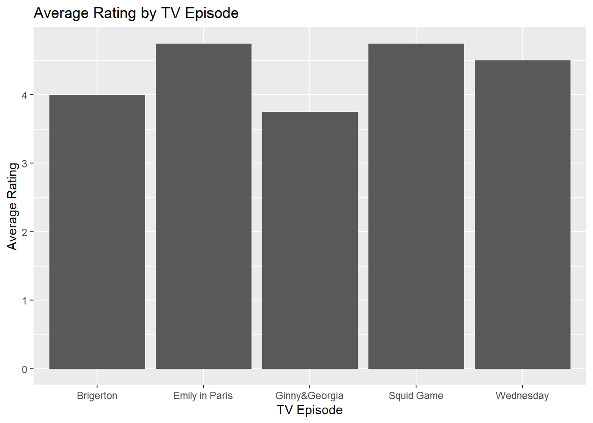

url<-"C:/Users/tenlh/tv_episodes_rating.csv"
tv_episode_rating<-read.csv(file=url)Wee2A: SQL and R
Introduction
For this assignment, I will create three related tables using PostgreSQL. The first table will contain six television episodes
| episodes_id | episodes_name |
the second will contain five users,
| user_id | name |
and the third will contain user_id tv_episodes_id, and rating as a variables name.
| user_id | movie_id | rating |
I will create a database named tv_episodes_rating and use SQL queries to create and populate the tables. Since this is a many-to-many relationship, I will use primary and foreign keys to connect the tables. Finally, I will export SQL data to a .csv file and load it into the R.Then I will use R to analyze the ratings and identify the highest-rated episodes.
Anticipated Data Challenges
Correctly using foreign keys to connect the tables.
missing ratings because users may not watch or rate every episode. I will need to handle these missing values carefully when calculating average ratings.
Finding highest rated tv_episodes.
Implementation Detail
Step 1: Create tables using SQL
CREATE TABLE tv_episodes( episode_id INT PRIMARY KEY, episode_name VARCHAR(50) NOT NULL);
CREATE TABLE users( user_id INT PRIMARY KEY, name VARCHAR(50) NOT NULL);
CREATE TABLE ratings ( rating_id INT PRIMARY KEY, episode_id INT, user_id INT, rating INT CHECK (rating >= 1 AND rating <= 5), FOREIGN KEY (episode_id) REFERENCES tv_episodes(episode_id), FOREIGN KEY (user_id) REFERENCES users(user_id) );
STEP 2:Insert data into tables
INSERT INTO tv_episodes(episode_id,episode_name)VALUES (100,‘Squid Game’), (101,‘Emily in Paris’), (102,‘Ginny&Georgia’), (103,‘Brigerton’), (104,‘Wednesday’), (105,‘Stranger Things’);
INSERT INTO users(user_id,name)VALUES (1,‘Tenzin’), (2,‘Laura’), (3,‘Zara’), (4,‘Dolma’), (5,‘Jose’)
INSERT INTO ratings(user_id,episode_id,rating) VALUES (1,100,5),(1,101,4),(1,102,3),(1,103,4),(1,104,5), (2,100,4),(2,101,5),(2,102,4),(2,103,5),(2,104,4), (3,100,5),(3,104,5), (4,100,5),(4,101,5),(4,102,4),(4,103,3), (5,101,5),(5,102,4),(5,103,4),(5,104,4);
STEP 3: Get tables
SELECT * FROM tv_episodes; SELECT * FROM users; SELECT * FROM ratings;
STEP 4: Join the tables
SELECT u.name, e.episode_name, r.rating FROM users u CROSS JOIN tv_episodes e LEFT JOIN ratings r ON u.user_id = r.user_id AND e.episode_id = r.episode_id;
STEP 5:Export SQL data to .csv file
5.1: Load TV_episodes_ratings.csv into R
STEP 6: Data Analysis in R
library(tidyverse)── Attaching core tidyverse packages ──────────────────────── tidyverse 2.0.0 ──
✔ dplyr 1.2.0 ✔ readr 2.2.0
✔ forcats 1.0.1 ✔ stringr 1.6.0
✔ ggplot2 4.0.3 ✔ tibble 3.3.1
✔ lubridate 1.9.5 ✔ tidyr 1.3.2
✔ purrr 1.2.1
── Conflicts ────────────────────────────────────────── tidyverse_conflicts() ──
✖ dplyr::filter() masks stats::filter()
✖ dplyr::lag() masks stats::lag()
ℹ Use the conflicted package (<http://conflicted.r-lib.org/>) to force all conflicts to become errorsCheck NUll data
anyNA(tv_episode_rating)[1] TRUEglimpse(tv_episode_rating)Rows: 30
Columns: 3
$ name <chr> "Tenzin", "Tenzin", "Tenzin", "Tenzin", "Tenzin", "Tenzin…
$ episode_name <chr> "Squid Game", "Emily in Paris", "Ginny&Georgia", "Brigert…
$ rating <int> 5, 4, 3, 4, 5, NA, 4, 5, 4, 5, 4, NA, 5, NA, NA, NA, 5, N…There are 30 rows and 3 columns
head(tv_episode_rating) name episode_name rating
1 Tenzin Squid Game 5
2 Tenzin Emily in Paris 4
3 Tenzin Ginny&Georgia 3
4 Tenzin Brigerton 4
5 Tenzin Wednesday 5
6 Tenzin Stranger Things NACount rating per user
library(dplyr)Removing missing rating
filtered_rating_df <- tv_episode_rating %>%
filter(!is.na(rating))filtered_user_rating_df <- filtered_rating_df %>%
group_by(name) %>%
summarise(number_of_ratings = n())
filtered_user_rating_df# A tibble: 5 × 2
name number_of_ratings
<chr> <int>
1 Dolma 4
2 Jose 4
3 Laura 5
4 Tenzin 5
5 Zara 2Count rating per tv_episodes
filtered_episode_rating_df <- filtered_rating_df %>%
group_by(episode_name) %>%
summarise(number_of_ratings = n())
filtered_episode_rating_df# A tibble: 5 × 2
episode_name number_of_ratings
<chr> <int>
1 Brigerton 4
2 Emily in Paris 4
3 Ginny&Georgia 4
4 Squid Game 4
5 Wednesday 4Compute average ratings
average_episode_rating_df <- filtered_rating_df %>%
group_by(episode_name) %>%
summarise(average_rating = mean(rating)) %>%
arrange(desc(average_rating))
average_episode_rating_df # A tibble: 5 × 2
episode_name average_rating
<chr> <dbl>
1 Emily in Paris 4.75
2 Squid Game 4.75
3 Wednesday 4.5
4 Brigerton 4
5 Ginny&Georgia 3.75ggplot(average_episode_rating_df,
aes(x = episode_name, y = average_rating)) +
geom_col() +
labs(
x = "TV Episode",
y = "Average Rating",
title = "Average Rating by TV Episode"
)
Conclusions
From my TV episode rating analysis, I found that Emily in Paris and Squid Game had the highest average ratings, with an average rating of 4.75. The other TV episodes had slightly lower average ratings based on the data I collected.